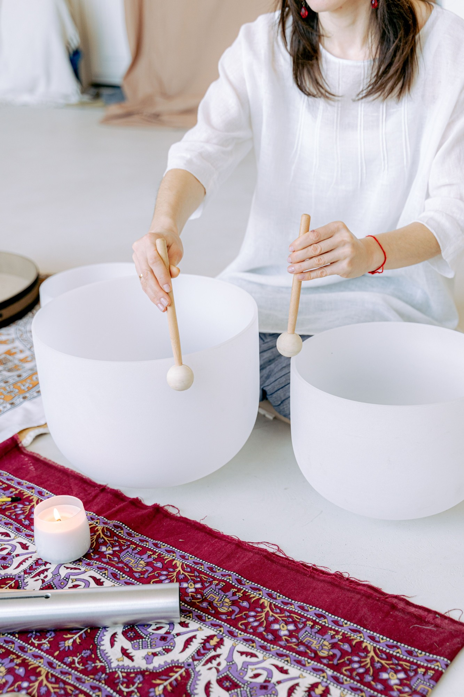

Somatic Therapy
Body-based awareness that helps release held tension and teaches your nervous system it is safe to soften again.

I am a somatic therapist and sound healer dedicated to helping you regulate your nervous system, ease stress, and reconnect with inner peace through guided breathwork and restorative sound.
About Me
Stress doesn't only live in the mind. It settles into the body as tight shoulders, shallow breath, restless sleep, and a nervous system that rarely feels safe enough to rest.
My work brings together somatic therapy, breathwork, and sound healing to gently guide you out of survival mode. Together we slow down, listen to what your body is telling you, and make space for calm to return, at your own pace.
Whether you're moving through burnout, anxiety, or simply longing to feel more grounded, my sessions offer a warm, unhurried place to land.
Your body already knows the way back to peace. I'm here to help you listen. — Lily
Body-based awareness that helps release held tension and teaches your nervous system it is safe to soften again.
Simple, supportive breathing practices that steady the mind, slow the heart, and bring you back to the present moment.
The resonance of crystal and metal singing bowls, inviting deep rest and helping body and mind restore.